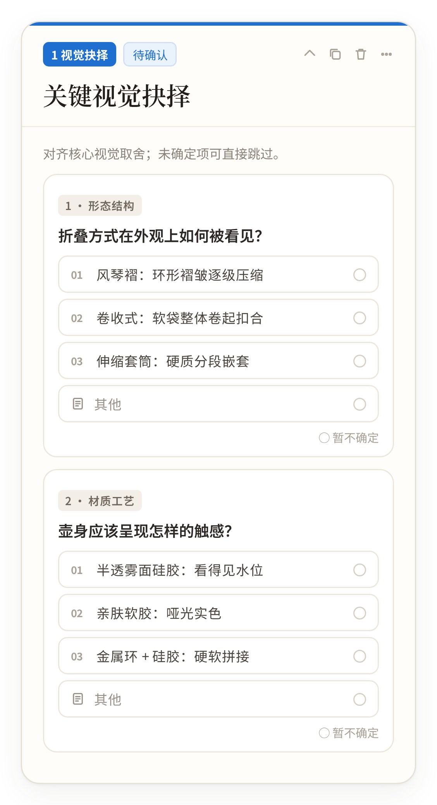
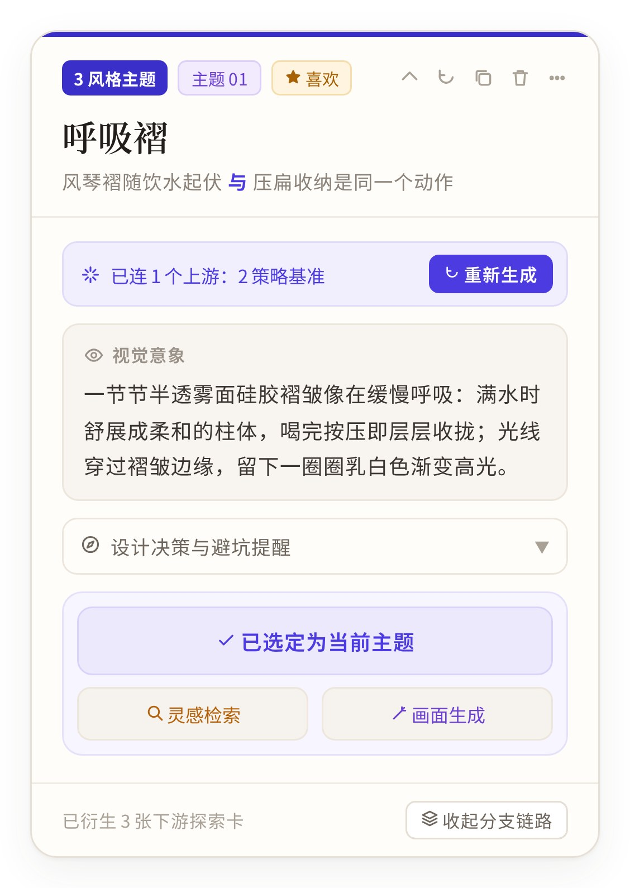
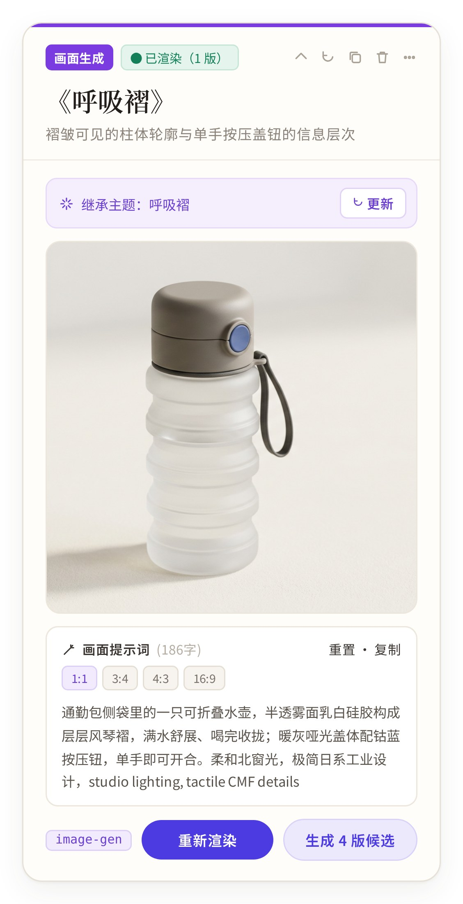
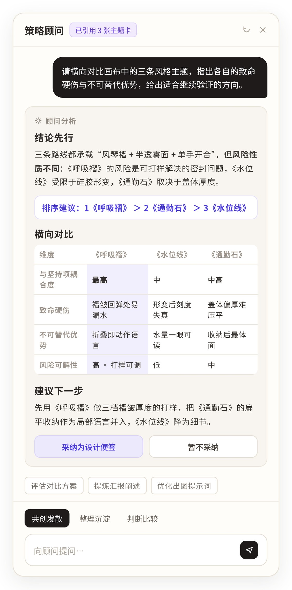

SIFT · 01 / 04
SIFT · 01 / 04
Sift the noise.
Find the direction.
给设计师用的 AI 智能体：把一句模糊 Brief，收敛成说得清来由的视觉方向。

01 · Design
设计
一张画布：从 Brief 到方向，
每一步都可追溯。
关键卡片特写




65 秒看完 SIFT。
短片用另一个 Brief（冷萃茶）完整演示一遍流程。
02 · Decision
关键取舍
提问从“问卷”变成“抉择”。
Before · 早期版本（重绘）
- 1. 请问您希望这款产品在整体上呈现出怎样的风格与气…
- 2. 在材料选择方面，您是否有特别偏好或需要避免的…
- 3. 关于目标用户的年龄层、使用习惯以及…
- 4. 您对色彩方案是否有初步设想，比如…
- 5. 是否需要考虑品牌调性与现有产品线…
随机 1–5 题 · 平均题干 40+ 字
1 开放式问卷：题干长、无选项，设计师得自己组织答案。
After · 当前版本 · 可直接点选
1 视觉抉择待确认
关键视觉抉择
对齐核心视觉取舍；未确定项可直接跳过。
→ 写入视觉抉择记录
2 每轮 2–3 题、题干 ≤35 字、选项对立，可选“暂不确定”；回答即写入记录。
为了守住“只做前期判断”，我删掉了三件事
- 09.18
Cut
长篇策略方案Why测试中没人读完
Instead每轮只问 2–3 个关键问题
- 09.21
Cut
生图、打样字段Why被当成出图工具
Instead画面只辅助判断
- 09.22
Cut
多个 AI 对话框Why确认过的判断找不回
Instead交互全部放进画布卡片
03 · Outcome
结果
终期测试：流程看得懂了，
非设计师也能参与。
中期测试 · 集中问题
- 文字偏多
- 只给链接
- 视觉证据不足
- 流程偏长
终期测试 · 6 位新参与者
- 流程关系更清楚
- 搜索更有方向
- 参考证据回到画布
- 非设计角色也能参与
“我不是设计师，但现在能理解为什么从 Brief 走到这个方向，也知道该怎么给反馈。”
JWY · 产品经理
4 周内 PRD 从 v1.0 迭代到 v4.0 并上线，100+ 次代码提交。
04 · Process
过程
过程细节，按需展开：
+ 展开− 收起设计前期的四个断层
意图模糊
说不清最大的不确定性
生图幻觉
前期要的是策略，不是效果图
搜图无序
模板样机掩盖真实工艺
决策不收敛
讲不清方向怎么来的
+ 展开− 收起导师评审：重新定义产品
“找图本身并不占优势……画布式对设计师团队更友好。”
Mentor review · 2026.09.22
AI 负责拆解需求、提出对立假设、记录来源设计师负责权衡选项、表达偏好、拍板路线
+ 展开− 收起PRD 四个版本：定位越改越窄
- 定位
- 视觉研究规划 Agent
- 变化
- 起点：解决“不知道先搜什么”
- 定位
- 方向收敛 + 视觉探索
- 变化
- 加入方向状态卡、人工检查点
- 定位
- 视觉策略与方向收敛智能体
- 变化
- 删掉生图、打样等伪工程字段
- 定位
- 多分支推演与协同工作台
- 变化
- 删掉右侧对话框、AI 主推标记
+ 展开− 收起给每个主题挂上“血统”
主语锚定
品类贯穿全链路
Brief 锚点
继承哪条核心主张
确认取舍
吸纳哪轮提问的选择
避坑防线
规避哪些已声明禁忌
+ 展开− 收起终期反馈与下一轮方案
| 新问题 | 提出者 | 下一轮方案（未上线） |
|---|---|---|
| 卡片多了会迷路 | LM · 服务设计 | 阶段折叠 + 小地图 |
| 术语有门槛 | JWY · 产品经理 | 术语悬停释义 |
| 跳出去会断思路 | CH · 工业设计 | 插件回填外部图片 |
| 结论不够醒目 | WY · 甲方 / 市场 | 置顶“当前结论” |
最难的不是让 AI 多说，而是让它问对问题。